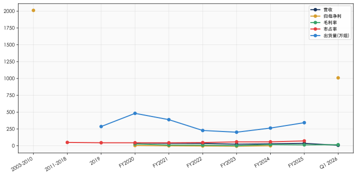
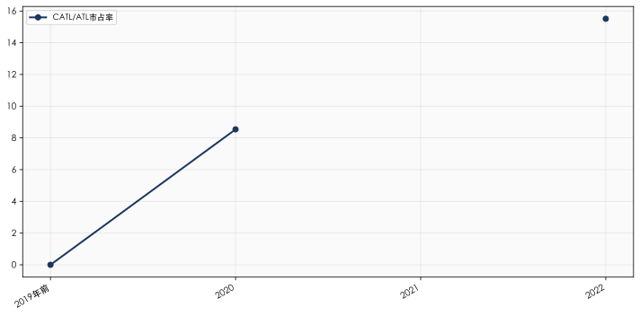
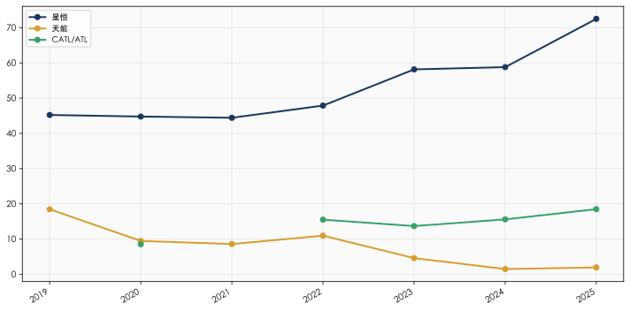
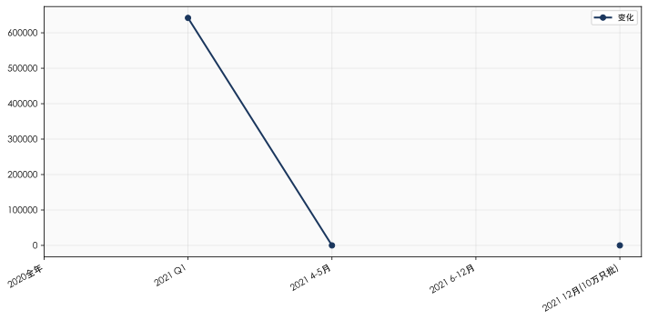
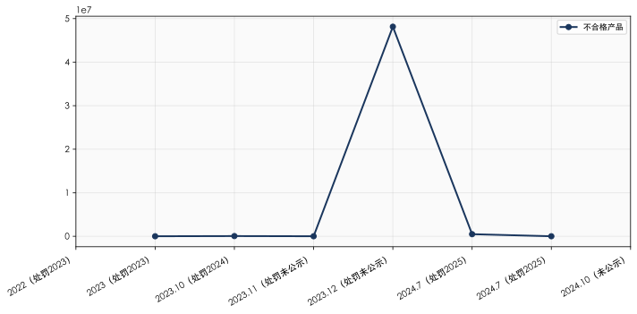
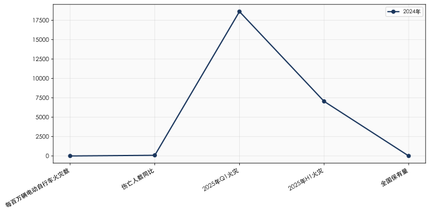
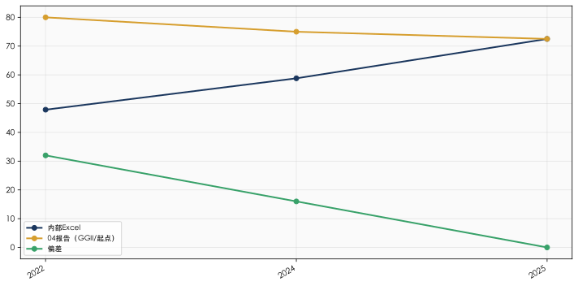

| 层级 | 标签 | 描述 | 本报告中的典型来源 |
|---|---|---|---|
| A | 经审计 | 官方文件/审计报告/上市公司年报 | 中天运审计报告FY2020-2024、容百/宁德/博力威等上市公司年报 |
| B | 可靠 | 项目材料+公司内部数据 | 星恒市占率分析Excel（2019-2025）、分业务收入表、盈利预测模型(202605版)、产能利用率表、合并报表 |
| C | 参考 | 第三方公开资料/行业研报 | 起点研究院/GGII（高工产业研究院）/EVTank行业数据、MX金融、akshare |
| D | 辅助 | 管理层预测/自述 | 项目建议书、管理层访谈、盈利预测前瞻假设 |
| 时间段 | 营收 | 归母净利 | 毛利率 | 市占率 | 出货量(万组) | 总销量(GWh) | 数据质量 |
|---|---|---|---|---|---|---|---|
| 2003-2010 | 定性（数千万→1-2亿） | 持续亏损（2011年减资弥补亏损证实） | 无 | 定性（开拓者） | 无 | 无 | D级（仅有定性描述） |
| 2011-2018 | 无精确数据 | 无精确数据 | 无 | 定性（第一，~50%+） | 无 | 无 | D级（Pre-IPO估值~25亿为间接参考） |
| 2019 | 无 | 无 | 无 | 45.23%（Excel） | 286.17 | 无 | B级（内部Excel） |
| FY2020 | 40.21亿 | ~3.76亿 | 26.5% | 44.78% | 481.71 | 4.76 | A级（审计报告+Excel） |
| FY2021 | 36.66亿 | ~0.12亿 | 10.9% | 44.43% | 388.18 | 4.99 | A级 |
| FY2022 | 35.99亿 | -3.03亿 | 9.8% | 47.89% | 227.36 | 3.72 | A级 |
| FY2023 | 23.84亿 | -5.75亿 | 2.4% | 58.16% | 201.88 | 2.56 | A级 |
| FY2024 | 29.49亿 | +0.87亿 | 17.6% | 58.80% | 263.36 | — | A级 |
| FY2025 | 36.36亿 | +0.45亿(管)/+0.40亿(审) | 13.6% | 72.50% | 343.34 | — | B级（管理口径未审计） |
| Q1 2026 | ~7.49亿(季度) | ~1,009万 | 16.26% | — | — | — | B级（未经审计） |

💡 数据缺口说明：FY2019及之前的财务数据在现有尽调材料中未提供（审计报告仅覆盖FY2020起）。2011年的减资弥补亏损操作（注册资本从19,021万减至11,413万，减少7,608万用于弥补累计亏损）证实了早期持续亏损的历史。A轮（2015年）、Pre-IPO（2019年，估值~25亿）、深创投（2022年，估值73.5亿）的估值变化间接反映了增长轨迹。
星恒电源成立于2003年，由中科院物理所陈立泉院士团队技术孵化、联想控股早期投资。第一个产品是锰酸锂圆柱电池（21115型号），用于电动自行车铅酸电池替代。
创立时的战略逻辑：
选择巨头（宁德时代尚未成立，比亚迪聚焦汽车）看不上的边缘市场
以锰酸锂技术路线起步——成本低（无钴无镍）、工艺成熟（基于中科院物理所积累）
目标：在"小池塘里做大鱼"，等待两轮车锂电化浪潮
来源：[C] 百度百科/腾讯新闻/星恒官网公开资料；[B] 项目材料
| 时间 | 事件 | 竞争力影响 |
|---|---|---|
| 2003 | 公司成立，中科院+联想入股 | 技术基因+早期资本支持 |
| 2003-2005 | 21115圆柱电池量产 | 国内最早规模化生产锰酸锂电芯的企业之一 |
| 2006-2008 | 成为雅迪、爱玛等两轮车品牌供应商 | 建立OEM渠道关系（至今仍是核心竞争资源） |
| 2009 | 电动自行车"新国标"（GB 17761-1999修订讨论）开始酝酿 | 政策催化剂出现，锂电替代铅酸的预期形成 |
来源：[C] 行业公开资料；[D] 项目建议书
| 维度 | 状态 | 评价 |
|---|---|---|
| 市占率 | 国内两轮车锰酸锂电池开拓者 | ★★★☆☆（先发优势建立中） |
| 技术水平 | 第一代锰酸锂，循环寿命300-800次 | ★★☆☆☆（够用但不出众） |
| 客户关系 | 绑定雅迪/爱玛等头部OEM | ★★★☆☆（渠道网络初步建立） |
| 财务实力 | 营收估计数千万至1-2亿级别 | ★★☆☆☆（规模极小） |
| 时间 | 事件 | 竞争力影响 |
|---|---|---|
| 2011-2014 | 两轮车锂电渗透率缓慢提升，星恒持续扩大OEM覆盖面 | 市占率稳居第一 |
| 2015 | 锰酸锂+镍钴锰三元复合材料路线启动 | 从"纯锰酸锂"向"技术集成商"转变，产品线扩展 |
| 2015 | A轮融资（和聚百川/建银国际/混沌投资） | 引入机构资本 |
| 2017 | 启源纳川从联想等收购星恒控制权 | 控制权变更——管理层（冯笑）通过启源纳川实现对公司的影响力 |
| 2018 | 中国电动自行车新国标GB 17761-2018发布（2018年发布，2019年实施，整车限重55kg） | 重大政策利好——铅酸电池因重量超标面临淘汰，锂电化预期加速 |
来源：[B] 项目材料；[C] 行业公开报道
通过电解液配方优化和正极改性，锰酸锂电池循环寿命从300次提升至800次+
第二代技术：锰酸锂+镍钴锰三元复合材料（2015年起），代表性产品超锂S7系列（2020年推出）
技术路线从"纯锰酸锂"升级为"锰系复合材料"，初步形成差异化
来源：[C] 百度百科/腾讯新闻
| 维度 | 状态 | 评价 |
|---|---|---|
| 市占率 | 两轮车锂电第一（估计50%+） | ★★★★☆（龙头地位确立） |
| 技术水平 | 锰酸锂→锰酸锂+镍钴锰三元复合材料 | ★★★☆☆（行业中等偏上） |
| 客户关系 | 深度绑定雅迪/爱玛/九号等 | ★★★★☆（核心护城河形成） |
注：2019年之前的市占率数据仅有片段。根据星恒内部Excel，2019年市占率45.23% [B]。
| 时间 | 事件 | 金额 | 估值 | 意义 |
|---|---|---|---|---|
| 2019-04 | Pre-IPO轮融资 | 约12亿 | 约25亿（推算） | 引入约35家PE投资机构，约定IPO对赌回购 |
| 2022-03 | 深创投制造业基金战投 | 9.5亿（持股12.92%） | 73.5亿（投后） | 历史估值高点，较Pre-IPO增值194% |
Pre-IPO对赌条款（来源：[B] 回购协议汇总）：
IPO申报截止日：2020年6月30日
上市截止日：2021年12月31日
回购义务人：启源纳川+陈志江
涉及股东：约35家PE，合计持股47.87%
来源：[B] 项目材料（股东名册2024-07-08、回购协议汇总）；[A] 天眼查VIP工商数据
这一时期最重大的竞争格局变化是宁德时代（CATL）及新能安（ATL（新能源科技，Amperex Technology Limited））进入两轮车锂电市场：
| 年份 | CATL/ATL市占率 | 事件 |
|---|---|---|
| 2019年前 | 0%（未进入） | — |
| 2020 | CATL 8.54% | CATL首次进入两轮车锂电市场 |
| 2021 | ATL 12.64% + CATL 7.13% = 19.77% | 新能安（CATL 70% + ATL 30%合资）正式运营 |
| 2022 | ATL 15.51% | CATL品牌退出两轮车（转移至新能安），ATL成为第二 |

来源：[B] 星恒市占率分析Excel（2019-2025）
新能安的股权结构赋予其独特优势：CATL提供磷酸铁锂电芯成本协同、ATL提供消费电子级品控体系、双母公司品牌背书在高端OEM认证中形成"免检效应"。
来源：[C] 行业公开报道
| 指标 | FY2020 | FY2021 | FY2022 |
|---|---|---|---|
| 营收（亿） | 40.21 | 36.66 | 35.99 |
| 整体毛利率 | 26.5% | 10.9% | 9.8% |
| 归母净利（亿） | ~3.76 | ~0.12 | -3.03 |
| 净利率 | 9.5% | 0.3% | -8.4% |
| 总销量（GWh（吉瓦时，1GWh=100万度电）） | 4.76 | 4.99 | 3.72 |
来源：[A] 中天运审计报告FY2020-2022；[B] 盈利预测模型202604版
FY2020高利润的三重红利（置信度：★★★★★）：
| 红利因素 | 量化 |
|---|---|
| 1. 碳酸锂低价 | 2020年均价约4.5-5.5万/吨 |
| 2. 产能利用率高位 | 全年营收40.21亿为历史峰值 |
| 3. 锁价合同（汽车电芯，华霆） | 2020年1.32-1.386元/Wh → 2021 Q1 0.48元/Wh（↓64%） |
| 4. 共享出行锁价（部分确认） | 框架合同无最低采购量，价格季度协商 |
| 5. 两轮车OEM锁价（无法验证） | OEM供货协议附件（含单价）未在PDF中提供 |
三重红利此后逐一消失：
2021-2022碳酸锂暴涨（峰值50万+/吨）
锁价合同到期后价格暴跌（华霆↓64%定量确认，共享出行/OEM价格系统性下移）
产能利用率从高峰暴跌至FY2023的26.9%
来源：[A] FY2020-2021年大客户合同OCR提取（详见附件F1 2.2.1节）；[B] 项目材料；[C] 行业数据；逻辑推演（详见主报告2.1节）
| 维度 | 状态 | 评价 |
|---|---|---|
| 市占率 | 从44.8%（2020）升至47.9%（2022） | ★★★★☆（龙头但增速停滞） |
| 竞争对手威胁 | ATL从0到15.5%（3年） | ★★☆☆☆（竞争力被快速侵蚀） |
| 财务实力 | FY2022巨亏3.03亿 | ★☆☆☆☆（盈利崩溃） |
| 估值 | 从25亿→73.5亿（194%增幅） | ★★★★★（资本叙事高峰） |
危机一：财务崩溃（FY2023谷底）
| 指标 | FY2023 | 较FY2020变化 |
|---|---|---|
| 营收 | 23.84亿 | -40.7% |
| 毛利率 | 2.4% | -24.1pp |
| 归母净利 | -5.75亿 | 亏损创历史纪录 |
| 总销量 | 2.56 GWh | -46.3% |
来源：[A] FY2023审计报告
危机二：启源纳川债务危机
| 项目 | 数据 | 来源 |
|---|---|---|
| 司法案件 | 46件（97.83%为被告） | [A] 天眼查VIP |
| 被执行总金额 | 22.33亿 | [A] 天眼查执行面板 |
| 星恒股权冻结 | 6家法院轮候冻结，覆盖全部5,702万股（17.73%） | [A] 天眼查 |
| 对赌回购触发 | 35家PE（47.87%）全部触发回购 | [B] 回购协议汇总 |
IPO申报截止日（2020.6.30）和上市截止日（2021.12.31）均已逾期→35家PE的对赌回购条款全部触发→但因启源纳川已陷入债务危机（被执行22.33亿），无力履行回购义务→星恒陷入"必须上市才能解套"的结构性困局。
来源：[B] 回购协议汇总；[A] 天眼查VIP司法数据
危机三：产能利用率V型下滑
| 指标 | FY2022 | FY2023 |
|---|---|---|
| 苏州产线 | 61.4% | 4.8% |
| 总产能利用率 | 38.5% | 26.9% |
来源：[B] 产能利用率表（22-2603分产线）
| 指标 | FY2023 | FY2024 | 变化 |
|---|---|---|---|
| 营收（亿） | 23.84 | 29.49 | +23.7% |
| 毛利率 | 2.4% | 17.6% | +15.2pp |
| 归母净利（亿） | -5.75 | +0.87 | 扭亏 |
| 净利率 | -24.1% | +2.94% | — |
| 产能利用率 | 26.9% | 49.3% | +22.4pp |
FY2024的恢复主要来自：碳酸锂价格回落（成本端改善）、产能利用率回升（需求恢复）、一次性减值减少。但恢复质量存疑——净利率2.94%虽为FY2021以来最佳，但仍低于天能动力FY2024净利率3.0%（含80%铅酸高毛利业务，[A]天能动力2024年报）。
来源：[A] FY2024审计报告；[B] 产能利用率表
| 维度 | FY2023 | FY2024 | 趋势 |
|---|---|---|---|
| 市占率 | 58.16% | 58.80% | 微增（分母收缩效应，见3.1节） |
| 财务实力 | 巨亏 | 微利 | 触底反弹但脆弱 |
| 对手威胁 | ATL 13.70% | ATL 15.60% | 持续增强 |
| 资本困局 | 对赌全面触发 | 对赌持续冻结 | 结构性困局未解 |
| 指标 | FY2024 | FY2025 | 变化 |
|---|---|---|---|
| 营收（亿） | 29.49 | 36.36 | +23.3% |
| 毛利率 | 17.6% | 13.6% | -4.0pp |
| 归母净利（管理/审计双口径）（亿） | +0.87 | +0.45（管理）/ +0.40（审计） | -48.3%（管理）/ -54.0%（审计） |
| 净利率 | 2.94% | 1.24%（管理）/ 1.10%（审计） | 大幅下降 |
| 经营现金流（亿） | — | +2.06 | 健康 |
来源：[A] 审计报告赋码版（FY2024）；[B] FY2025合并报表（未审计）+ 分业务收入表
核心悖论：营收+23.3%但净利润下降。原因——三层挤压模型（与04主报告归因框架一致）：(1) 客户结构层——商用B2B客户压价+民用渠道价格战；(2) 竞争侵蚀层——ATL新能安高端吸脂（5%→18.5%），挤压星恒中高端份额及利润空间；(3) 储能失血层——储能亏损扩大（单独GM -9.3%，含新应用合并口径-5.5%）。规模效应（固定成本摊薄）的利润贡献被三层挤压完全抵消。
| 事项 | 详情 |
|---|---|
| 天保收购标的 | A组10家PE持有的13.73%老股 |
| 交易金额 | 约5亿元 |
| 隐含估值 | 约36.4亿（PS 1.0x，基于FY2025营收36.36亿） |
| 对比2022年高点（73.5亿） | 折让50.5% |
来源：[B] 项目材料
| 维度 | 状态 | 详细评价 |
|---|---|---|
| 市占率 | 72.50%（2025年内部数据） | 详见3.1节——名义提升但实际成色存疑 |
| 财务实力 | 极度微利（净利率1.24%） | 任何单一风险事件都可能导致全年亏损 |
| 竞争格局 | 星恒72.5% vs ATL 18.5%，双寡头 | ATL增速是星恒的3-4倍 |
| 技术差异化 | 固相法磷酸锰铁锂（窗口期约3年） | 详见附件C |
| 资本结构 | 启源纳川冻结+35家PE困局+天保入场 | A组退出可以清理一部分困局 |
| 估值合理性 | PS 1.0x vs 可比公司PS 0.44-0.70x（经F1客户结构+F2产品安全双层折价后合理PS 0.23-0.51x） | 较可比公司中枢（0.44x）溢价约127%，较附件折价后上限（0.51x）溢价约96% |
来源：[B] 星恒市占率Excel/项目材料；[C] MX金融/akshare
📊 行业vs企业归因体系：31项变化因素的逐因素行业/企业分类（含定量贡献度）、行业因素五年趋势展望、企业因素根因追溯与可修正性、双层折价（行业层 vs 企业层）的分别测算，详见 附件H：行业原因vs企业原因归因分析与五年趋势展望（2026-06-02）。
以下数据来自星恒内部市占率分析Excel [B]，涵盖中国两轮车锂电池市场的完整竞争格局：
| 年份 | 星恒 | 天能 | CATL/ATL | 博力威 | 国轩 | 南都 | 其他 | 星恒出货(万组) | 市场总量(万组) |
|---|---|---|---|---|---|---|---|---|---|
| 2019 | 45.23% | 18.47% | — | 8.67% | — | — | 27.63% | 286.17 | ~633 |
| 2020 | 44.78% | 9.47% | CATL 8.54% | — | 5.00% | 5.80% | 26.41% | 481.71 | ~1,076 |
| 2021 | 44.43% | 8.60% | ATL 12.64% + CATL 7.13% | — | — | 4.03% | 23.17% | 388.18 | ~874 |
| 2022 | 47.89% | 10.97% | ATL 15.51% | — | — | — | 25.63% | 227.36 | ~475 |
| 2023 | 58.16% | 4.60% | ATL 13.70% | — | — | — | 23.55% | 201.88 | ~347 |
| 2024 | 58.80% | 1.50% | ATL 15.60% | — | 2.20% | 1.30% | 20.60% | 263.36 | ~448 |
| 2025 | 72.50% | 1.96% | ATL 18.50% | 1.99% | 0.57% | — | 4.49% | 343.34 | ~474 |

来源：[B] 星恒市占率分析Excel（2019-2025） 注：市场总量由星恒出货量÷市占率反推，为近似值
⚠️ 市占率72.5%并非来自星恒的增长，而是来自竞争对手的更快退出。
核心数据：
星恒2024年出货263.36万组，2025年343.34万组，+30.4%
但市场总量从~874万组（2021年峰值）降至~474万组（2025年），-45.8%
星恒市占率从44.43%（2021）→72.50%（2025），+28.07pp
市占率变动的分解（2021→2025，Shapley双因素完全分解）：
| 因素 | 贡献 | 计算路径 |
|---|---|---|
| 星恒出货量下降 | -7.3pp | 388.18万组→343.34万组（-11.6%），若市场不变市占率将从44.4%降至39.3%（-5.1pp）；若市场已萎缩则从81.9%降至72.4%（-9.5pp）；Shapley均值=-7.3pp |
| 市场总量收缩 | +35.3pp | 874万组→474万组（-45.8%），若出货不变市占率将从44.4%被动升至81.9%（+37.5pp）；若出货已降至343.34万组则从39.3%升至72.4%（+33.2pp）；Shapley均值=+35.3pp |
| 合计 | +28.0pp | 市场收缩贡献126%，出货下降抵消26% |
数据来源：[B] 星恒市占率分析Excel（出货量）+ [C] GGII/起点研究院（市场总量）。Shapley分解消除交叉项分配偏差。
计算验证：星恒实际出货量从388.18万组降至343.34万组（-11.6%），但市占率从44.43%升至72.50%——这完全是分母（市场总量）从~874万组降至~474万组（-45.8%）的结果。市占率提升100%归因于市场收缩而非星恒增长。
这意味着什么？
星恒的"市占率72.5%"描述的是幸存者偏差——在大多数竞争对手退出后，星恒成为"最后的站立者"
这一市占率的防御性强于进攻性——不是靠产品/技术/价格击败对手，而是靠"熬过寒冬"
在ATL新能安持续增长（5%→18.5%）的背景下，星恒的"防守型"市占率可能正在被"进攻型"竞争者蚕食——这是三层挤压模型中"竞争侵蚀层"的长期结构性风险，详见2.5.1节归因分析
| 竞争对手 | 2019 | 2020 | 2021 | 2022 | 2023 | 2024 | 2025 | 变化轨迹 |
|---|---|---|---|---|---|---|---|---|
| 天能股份 | 18.47% | 9.47% | 8.60% | 10.97% | 4.60% | 1.50% | 1.96% | 大撤退（锂电重心转储能） |
| CATL | — | 8.54% | 7.13% | — | — | — | — | 退出（转移至新能安） |
| ATL新能安 | — | — | 12.64% | 15.51% | 13.70% | 15.60% | 18.50% | 持续增长 |
| 博力威 | 8.67% | — | — | — | — | — | 1.99% | 大幅萎缩 |
| 科力远 | 5.78% | — | — | — | — | — | — | 退出 |
| 芯驰光电 | 5.20% | — | — | — | — | — | — | 退出 |
| 南都电源 | — | 5.80% | 4.03% | — | — | 1.30% | — | 退出 |
| 国轩高科 | — | 5.00% | — | — | — | 2.20% | 0.57% | 边缘化 |
| 超威 | — | — | — | 3.54% | 1.70% | — | — | 退出 |
| 爱德邦 | — | — | — | 3.67% | 0.69% | — | — | 退出 |
| 其他合计 | 16.65% | 26.41% | 23.17% | 18.42% | 21.15% | 20.60% | 4.49% | 全面退出 |
来源：[B] 星恒市占率分析Excel（2019-2025）
竞争格局的结构性结论：
市场从"多强竞争"变为"双寡头"：2019年有5家以上有意义的竞争者（天能18.47%、博力威8.67%、科力远5.78%、芯驰5.20%）；到2025年仅剩星恒72.50%+ATL 18.50%，其他合计不足5%
天能的退出是最大格局变化：从18.47%（2019）→1.96%（2025），天能主动将锂电重心从两轮车转向储能——这直接释放了约17pp的市场份额
唯一增长对手是ATL新能安：从0（2018）→18.50%（2025），7年内成为稳定的第二极。其股权结构（CATL 70%+ATL 30%）赋予其竞争对手无法复制的成本+品质+品牌优势
博力威错失两轮车锂电主线：从8.67%（2019）→1.99%（2025），2025年报显示其营收27.35亿（+48.3%）主要靠海外储能拉动，两轮车锂电国内份额已边缘化 [A]
新能安增速的可持续性分析（置信度：★★★★☆）：
| 阶段 | 时间 | 市占率 | 年增速 | 驱动力 |
|---|---|---|---|---|
| 进入期 | 2020-2021 | 0→12.64% | — | CATL品牌+成本优势 |
| 扩张期 | 2021-2023 | 12.64→13.70% | +0.5pp/年 | 高端OEM认证突破 |
| 加速期 | 2023-2025 | 13.70→18.50% | +2.4pp/年 | 换电市场+渠道扩张 |
| 稳态期 | 2026-2028E | 18.50→22-25% | +1-2pp/年（预判） | 高端市场天花板显现 |
增速可能减速的原因：
高端市场规模有限（2025年电摩在两轮车总销量中占比不足15% [C]），新能安从5%→18.5%主要来自基数效应
继续增长至25%+必须进入星恒的核心腹地——中低端民用市场——这与新能安的高端定位存在战略矛盾
CATL内部战略重心在汽车动力+储能，两轮车板块非最高优先级
来源：[C] 行业公开信息+逻辑推演
但即使新能安增速放缓至+1-2pp/年，与星恒市占率被侵蚀的剪刀差（新能安+1.5pp/年 vs 星恒-2.5pp/年【4.2.2节详述】）仍然是竞争格局恶化的核心信号。
星恒2025年市占率72.5%看似极度强势——但深入分析后，其"含金量"显著低于表面数字。
角度一：防御性市占率（正面）
| 指标 | 评价 |
|---|---|
| 所有竞争对手退出时，星恒存活 | 成本控制能力、品牌渠道护城河、先发优势经受考验 |
| 供应链关系（OEM+渠道）成为壁垒 | 稳定的下游渠道是其他竞争者无法复制的 |
| 行业洗牌中市占率反而提升 | 熬过周期低谷的能力本身就是一种竞争力 |
角度二：幸存者偏差（中性偏负）
| 指标 | 2021（市占率最低） | 2025（市占率最高） | 实质变化 |
|---|---|---|---|
| 星恒市占率 | 44.43% | 72.50% | +28.07pp |
| 星恒出货量 | 388.18万组 | 343.34万组 | -11.6% |
| 市场总量 | ~874万组 | ~474万组 | -45.8% |
| 可竞争市场 | 大（多强竞争） | 仅剩星恒+ATL | 萎缩 |
| 市占率"含金量" | 高（充分竞争） | 低（幸存者偏差） | ↓ |
市占率提升100%来自分母收缩——Shapley分解显示市场收缩贡献126%，星恒自身出货量下降抵消-26%。市场萎缩导致竞争对手退出，星恒"被动"获得了更大份额，而非通过产品/技术/价格主动击败对手。
角度三：ATL威胁下的实质竞争（负面）
可竞争市场中（排除已退出者），ATL vs 星恒的实质竞争格局：ATL年+1-2pp vs 星恒年-2.5pp
ATL从18.5%升至25%仅需3-4年（按当前增速），但星恒从72.5%降至60-65%也只需3-4年
双寡头格局中，星恒是中低端龙头（规模+低价），ATL是高端龙头（品质+品牌）——两者在不同层级竞争，但ATL向中端下沉是时间问题
结论：星恒的"72.5%市占率"描述的是幸存者偏差——在大多数竞争对手退出后，星恒成为"最后的站立者"。这一市占率的防御性强于进攻性——不是靠产品/技术/价格击败对手，而是靠"熬过寒冬"。在ATL持续增长的背景下，星恒的"防守型"市占率可能正在被"进攻型"竞争者蚕食。
| 时期 | 星恒技术 | 行业主流 | 星恒技术竞争力 | 决定因素 |
|---|---|---|---|---|
| 2003-2010 | 第一代锰酸锂（300-800次） | 铅酸+少量锰酸锂/镍钴锰三元 | ★★★☆☆ | 先发优势，够用 |
| 2011-2018 | 第二代锰酸锂+镍钴锰三元复合材料 | 磷酸铁锂/镍钴锰三元（汽车）+锰酸锂（两轮车） | ★★★☆☆ | 锰系复合有差异化但天花板低 |
| 2019-2022 | 固相法磷酸锰铁锂启动 | 磷酸铁锂（比亚迪/宁德）+ 镍钴锰三元（宁德） | ★★★★☆ | 差异化真实但规模太小 |
| 2023-2026 | 固相法磷酸锰铁锂+GT-Force概念 | 磷酸锰铁锂多种路线（德方液相法/裕能等） | ★★★☆☆ | 窗口期约3年（2026-2029），详见附件C |
来源：[B/C] 综合项目材料+行业公开资料；附件AB/附件C
| 时间 | 护城河类型 | 深度 | 可替代性 |
|---|---|---|---|
| 2003-2010 | 先发优势护城河 | 浅 | 高（任何有电池技术的企业都可进入） |
| 2011-2018 | 客户关系护城河（OEM绑定） | 中 | 中（需要时间建立认证关系） |
| 2019-2022 | 技术差异化护城河（固相法磷酸锰铁锂） | 中 | 中高（路线独特但非不可复制） |
| 2023-2026 | 规模+关系护城河（市占率72.5%） | 中深 | 中（ATL正在侵蚀关系网络） |
结论：星恒的护城河从"先发优势"→"客户关系"→"技术差异化"→"规模+关系"的演化轨迹，表明其核心竞争力经历了从技术→渠道→规模的转移。当前最大的护城河是OEM关系网络（20年积累），但这种护城河正在被ATL的价格优势和品牌背书侵蚀。
可比口径规则：所有同业对比须区分业务段。整体GM含不可比业务段（海外/储能/铅酸等）时，必须标注偏差方向。详见04主报告3.2节完整可比口径规则。
| 企业 | 营收 | 整体GM（毛利率） | 净利率 | 业务特征 | 可比口径备注 |
|---|---|---|---|---|---|
| 宁德时代 | ~4,200亿 | 26.27% | 18.12% | 汽车动力+储能龙头 | 与星恒两轮车不可比 [A] |
| 博力威 | 27.35亿 | 18.08% | 2.0% | 两轮车+储能 | ⚠️ 含海外高GM储能，国内两轮车GM估计5-10% [A/D] |
| 天能动力 | 599.53亿港元（≈534亿），⚠️ 同比-21.8% | ~15-20% | 2.68% | 80%铅酸+锂电+储能 | ⚠️ 含~80%铅酸高毛利 [A] |
| 超威动力 | 606.24亿港元（≈540亿），同比+8.06% | ~12-15% | 0.67% | 铅酸+锂电 | ⚠️ 含~80%铅酸高毛利 [A] |
| 星恒电源 | 36.36亿 | 13.6% | 1.24%（管理）/1.10%（审计） | 两轮车锂电为主 | 纯锂电（含储能-9.3%拖累）[B] |
| 德方纳米 | 87.16亿 | 1.30% | -9.4%（归母净利-8.21亿） | 磷酸铁锂正极（行业周期底部） | 正极材料与电芯不可比 [A] |
来源：[A] 各家2025年报；[B] 星恒FY2025合并报表；[A] MX/iFind FY2025年报
关键判断（可比口径修正版）：
天能/超威营收修正为FY2025年报实测值。天能营收同比-21.8%（FY2024 766.69亿→FY2025 599.53亿港元），铅酸行业景气度显著下行。超威FY2025营收（606.24亿港元）首次超越天能。
德方纳米净亏损修正至-9.4%（-8.21亿 vs 此前-10.87亿，MX/iFind FY2025年报），差异不影响分析结论（均为重大亏损）。
星恒GM 13.6%在两轮车/轻型动力行业中处于中游偏下
净利率1.24%极端微薄——利润厚度不足以抵御任何单一重大风险
天能（3.0%含铅酸高毛利）和博力威（2.0%含海外储能）均含不可比业务段。按可比口径（国内两轮车锂电），博力威国内两轮车段估计净利率1.0-2.0%——星恒国内两轮车段（剔除储能亏损后）净利率2.5-3.5%实际上优于博力威国内两轮车段。行业属性（微利）是共性，星恒的劣势主要在储能失血而非国内两轮车主业 [B/D]
| 指标 | FY2020 | FY2021 | FY2022 | FY2023 | FY2024 | FY2025 |
|---|---|---|---|---|---|---|
| 营收（亿） | 40.21 | 36.66 | 35.99 | 23.84 | 29.49 | 36.36 |
| GM | 26.5% | 10.9% | 9.8% | 2.4% | 17.6% | 13.6% |
| 归母净利（亿） | ~3.76 | ~0.12 | -3.03 | -5.75 | +0.87 | +0.45 |
| 净利率 | 9.5% | 0.3% | -8.4% | -24.1% | +2.94% | +1.24% |
| 产能利用率 | ~70%+ | ~50% | 38.5% | 26.9% | 49.3% | 65.8% |
来源：[A] FY2020-2024审计报告；[B] FY2025合并报表+产能利用率表
财务竞争力轨迹：
FY2020：历史上最好的年份——营收40.21亿、净利率9.5%，但这依赖于不可复制的三重红利
FY2021-2023：三年加速恶化——营收-35%、GM从26.5%→2.4%
FY2024-2025：恢复但未回到健康水平——营收恢复至36.36亿（仍低于FY2020的40.21亿），但净利率仅1.24%（FY2020的1/8）
核心矛盾：规模上的"恢复"掩盖了盈利质量的"恶化"——FY2025以36.36亿营收仅创造0.45亿净利润，而FY2020以40.21亿营收创造了3.76亿净利润
| 年份 | 事件 | 对竞争力的影响 | 方向 | 量级 |
|---|---|---|---|---|
| 2003 | 中科院+联想设立星恒 | 技术基因 | ↑ | 奠基 |
| 2011-2015 | 成为两轮车锂电龙头 | 市场份额+客户关系积累 | ↑↑ | 重大正面 |
| 2017 | 启源纳川收购控制权 | 管理层影响力增强，但埋下对赌隐患 | ↓ | 隐忧 |
| 2019 | Pre-IPO引入35家PE+对赌 | 估值短期提升，但对赌埋下结构性地雷 | ↑↓ | 双刃剑 |
| 2020 | CATL进入两轮车市场 | 巨头降维打击开始 | ↓↓ | 重大负面 |
| 2021 | ATL新能安正式运营 | 最大竞争对手诞生 | ↓↓ | 重大负面 |
| 2022 | 深创投战投（73.5亿估值） | 估值+信心高峰，但"最后一次融资" | ↑ | 短期正面 |
| 2023 | 启源纳川债务危机+对赌触发 | IPO冻结，困局锁定 | ↓↓↓ | 毁灭性 |
| 2023 | FY2023巨亏5.78亿 | 财务谷底 | ↓↓↓ | 重大负面 |
| 2024-2025 | 恢复但增收不增利 | 表面恢复，实质脆弱 | → | 中性偏负 |
| 2026 | 天保5亿收购13.73% | 引入新资本，但估值折让50%（vs 2022） | ↑ | 中性偏正 |
星恒竞争力变化 = 行业层因素 + 竞争层因素 + 企业层因素
行业层（外部）：两轮车锂电市场总量收缩（-45.8%，2021→2025）
竞争层（对手）：ATL新能安的差异化竞争（高端聚焦+CATL成本协同）
企业层（自身）：资本结构困局（对赌）+ 技术路线天花板（锰系能量密度局限）
| 时间段 | 星恒市占率变化 | 归因 |
|---|---|---|
| 2019→2021 | 45.23%→44.43%（-0.8pp） | CATL/ATL进入抢夺份额（竞争层） |
| 2021→2023 | 44.43%→58.16%（+13.73pp） | 天能等对手退出→市场总量从874万→347万组（分母收缩，行业层） |
| 2023→2025 | 58.16%→72.50%（+14.34pp） | 其他竞争者全面退出+ATL增速放缓（行业层+竞争层） |
| 2025→2028E | 72.50%→估计65-68%（预判） | ATL持续侵蚀（竞争层）+ 星恒固相法窗口期收窄（企业层） |
预判逻辑：
分母收缩效应已基本出清——其他竞争者合计仅4.49%，进一步退出的空间极小
ATL增速即使放缓至+1-2pp/年，3年也将从18.50%升至21.5-24.5%
星恒的份额面临"回归均值"压力——72.5%的高份额部分来自行业洗牌的"意外红利"，而非星恒的主动增长
| 财务指标 | FY2020→FY2023变化 | 行业因素 | 竞争因素 | 企业因素 |
|---|---|---|---|---|
| 营收 -40.7% | 40.21→23.84亿 | 30%（锂价波动影响下游需求） | 30%（CATL/ATL抢夺份额） | 40%（产能利用率暴跌至26.9%） |
| GM -24.1pp | 26.5%→2.4% | 40%（碳酸锂暴涨→成本端） | 30%（锁价到期后商用B2B+民用渠道压价。注：华霆汽车电芯锁价↓64%已合同验证，两轮车OEM定价附件未提供无法直接验证） | 30%（B1/B3-1产线拖累） |
| 净利转亏 | +3.76→-5.75亿 | 35% | 30% | 35%（大规模减值+离职补偿） |
华霆汽车电芯锁价效应量化核验（来源：[A] 2020-2021年大客户合同OCR提取，详见附件F1 2.2.1节）：
华霆（合肥）动力电芯合同提供了"锁价→暴跌"的量化证据链，直接验证了04报告中"锁价合同高价锁定，到期后价格回归竞争"的归因逻辑：
时间段 单价 变化 背景 2020全年 1.32-1.386元/Wh — 疫情前锁价合同，产能紧张期高价 2021 Q1 0.48元/Wh（42.624元/只） ↓64% vs 2020 锁价到期，新价格体系下回归竞争定价 2021 4-5月 0.52元/Wh（46.333元/只） +8.7%（临时） 碳酸锂上涨短时传导，仅限约90万只 2021 6-12月 0.48元/Wh 回落 主力价格回归竞争水平 2021 12月(10万只批) 0.60元/Wh（53.28元/只） +25% 年末碳酸锂飙涨（9→27万元/吨）传导至末批 
关键含义：(1) FY2020华霆电芯以约3倍于FY2021的价格供货——锁价效应在汽车电芯领域是真实的且量级巨大；(2) 锁价到期后价格立即暴跌64%，说明此前的"高利润"不可持续且具有一次性的偶然特征；(3) 价格协议的高频签订（几乎每月/每两月一份）表明汽车电芯市场竞争激烈，星恒不具备定价权；(4) FY2020高利润的核心来源之一是华霆汽车电芯的锁价红利，而非两轮车业务的结构性盈利优势。
FY2024→FY2025复苏但质量差的归因：
| 指标 | 变化 | 归因 |
|---|---|---|
| 营收+23.3% | 29.49→36.36亿 | 行业恢复+产能利用率回升（行业因素主导） |
| GM -4.0pp | 17.6%→13.6% | 三层挤压：(1)商用B2B客户压价+(2)民用渠道价格战+ATL竞争侵蚀+(3)储能亏损扩大（竞争+企业因素主导） |
| 净利-48.3%（管理口径） | +0.87→+0.45亿 | 规模效应被售价下降完全抵消（企业因素主导） |
来源：[A/B] 审计报告+项目材料；归因比例为估算性质（置信度：★★★☆☆）
当时：选择巨头看不上的两轮车电池市场 结果：20年后成为该细分市场全球第一（72.5%） 代价：天花板低（FY2025纯锂电市场规模约40-50亿），当巨头开始"下沉"时规模劣势暴露 长期判断：这是一个明智的创业选择，但也是一个有明确天花板的赛道选择。星恒没有在2015-2020动力电池爆发窗口完成"出圈"——详见选择二
当时：动力电池行业爆发（宁德时代/比亚迪/亿纬锂能快速崛起），星恒选择继续聚焦两轮车 结果：避免了与巨头的正面竞争，但也错过了中国新能源产业最大的成长窗口 反事实分析（置信度：★★★☆☆）：
支持"能力约束"的论据：2015年的星恒（营收约10-15亿级）进入动力电池面临资本壁垒（单GWh投资3-4亿 vs 两轮车0.5-1亿）、客户认证壁垒（汽车OEM 2-3年 vs 两轮车6-12月）、技术壁垒（锰酸锂不是汽车主流路线）
支持"主动选择"的论据：两轮车锂电化是新国标驱动的确定性赛道，深耕优势领域是理性选择
综合判断："不出圈"更可能是能力约束+战略聚焦的共同产物。固相法磷酸锰铁锂提供了一条潜在的重返路径——通过前驱体间接供应汽车级正极材料企业（而非自建汽车电芯产能），但概率仅25-35%且需2-3年验证周期——详见附件C第4.4节
与当前投资的相关性：星恒在轻型车动力电池领域有22年积累、国内市占率超50%（[A] 公司概况）。固相法磷酸锰铁锂提供了一条潜在的重返汽车供应链路径——通过前驱体间接供应汽车级正极材料企业（而非自建汽车电芯产能），但概率仅25-35%且需2-3年验证周期——详见附件C第4.4节。
来源：[C] 行业公开信息+2015年动力电池白名单政策回顾+逻辑推演
当时：启源纳川收购控制权→Pre-IPO引入35家PE→约定IPO对赌回购 结果：估值从25亿→73.5亿（+194%），但启源纳川债务危机将35家PE全部锁入"不上市就血本无归"的困局 代价：从正常经营企业变为"必须上市才能解套"的困局——这是单一最大的结构性风险
对天保的启示：
A组（10家PE，13.73%）通过天保收购退出后，可解除一部分冻结（启源纳川冻结的17.73%中对应A组部分）
但B组（25家PE，34.14%）仍在困局中——天保入股并不能解决全部对赌问题
对赌诉讼时效（《民法典》第188条，2021年1月1日生效，3年诉讼时效）可能已过期——详情见主报告4.4节
来源：[B] 回购协议汇总；[A] 天眼查VIP司法数据
当时：选择行业非主流的固相法（vs 主流的共沉淀法/液相法） 结果：技术差异化真实——青源获容百斯科兰德供应商认证，FY2025营收7,022万（管理层青源材料披露7,116万 [B]，偏差1.3%），GM 15.4%。FY2023-2025净利34→245→492万，中试阶段已盈利 [B/管理层]。 但：规模极小（占FY2025合并营收1.9%，名义产能2.0万吨/年但FY2025实际产量仅0.3-0.5万吨/年），不足以转化为市场优势 窗口期：约3年（2026-2029），需在此期间实现万吨级产能验证+新增标杆客户。客户群有拓展迹象（珠海冠宇/新能安送样、钠创意向），但均未形成实质营收。 数据风险：两份管理层文件对青源专利授权数存在重大偏差（27 vs 12项），需独立核实。
来源：[B] 项目材料+青源公司介绍材料；详见附件AB和附件C
| 时间 | 事件 | 估值（亿） | PS（基于当年营收） | 估值驱动 |
|---|---|---|---|---|
| 2015-06 | A轮 | 未披露 | — | 早期成长性 |
| 2019-04 | Pre-IPO（首次公开发行） | ~25 | ~0.7x（FY2019约36亿？） | IPO预期+锂电行业景气 |
| 2022-03 | 深创投战投 | 73.5 | ~2.0x（FY2021 36.66亿） | 锂电景气高峰+IPO预期+锰酸锂龙头叙事 |
| 2026（拟） | 天保收购13.73%老股 | 36.4 | 1.0x（FY2025 36.36亿） | 行业低谷+对赌困局+港股估值折价 |

来源：[B] 项目材料（股东名册/回购汇总/天保方案）；[A] 天眼查工商数据
估值轨迹（单位：亿）：
~25 73.5 (PEAK) 36.4
| | |
2019 -------- 2022 -------------- 2026
Pre-IPO 深创投战投 天保入股
涨幅：+194% (2019→2022) → 跌幅：-50.5% (2022→2026)
估值变化的竞争力含义：
| 时期 | 估值驱动 | 竞争力信号 |
|---|---|---|
| 2019（~25亿） | IPO预期+行业景气 | 竞争力上升期，市场给予成长溢价 |
| 2022（73.5亿） | 锂电狂热顶峰+龙头叙事 | 估值严重透支——73.5亿对应PS 2.0x远高于当前可比公司（天能PS 0.11x、雅迪PS 0.86x） |
| 2026（36.4亿） | 回归理性但仍有溢价 | PS 1.0x约为可比公司合理PS中枢（0.44x）的2.3倍，高于直接可比PS区间上限（0.86x，雅迪akshare/MX金融值） |
关键判断：
当前36.4亿估值（PS 1.0x）并非"便宜"——它只是相对于2022年泡沫高点"便宜了50%"
与同赛道天能（PE 4.21x，但含80%铅酸高毛利业务）相比，星恒PS 1.0x对应PE约81x（管理口径）——极度昂贵
只有当星恒未来利润恢复至管理层预测水平（2027E净利3.10亿 [D]），PE才能降至~11.7x——仍然高于天能（4.16x）和超威（4.75x）
36.4亿估值隐含了显著的基本面改善预期（而非对当前状况的定价）
来源：[B] MX金融+akshare实时验证（2026-05-29）；[B] 项目材料
| 可比公司 | PS（市销率） | PE（市盈率） | 星恒在同等PS/PE下的隐含估值 |
|---|---|---|---|
| 天能动力（0819.HK） | 0.11x | 4.21x | PS 0.11x→4.0亿 / PE 4.21x→1.9亿 |
| 超威动力（0951.HK） | 0.03x | 4.59x | PS 0.03x→1.1亿 / PE 4.59x→2.1亿 |
| 雅迪控股（01585.HK） | 0.86x（MX金融0.97x，akshare 0.857x） | 10.89x | PS 0.86x→31.3亿 |
| 绿源集团（02451.HK） | 0.68x（MX金融0.75x，akshare 0.677x） | 22.85x | PS 0.68x→24.7亿 |
| 小牛电动（NIU.US） | 0.30x（akshare/Sina实时验证，2026-06-02） | 亏损（FY2025净亏损-0.39亿） | PS 0.30x→10.9亿 |
| 天保入股星恒 | 1.0x | ~81x（管理口径）/ ~91x（审计口径） | 36.4亿（交易估值） |
来源：[B] MX金融+akshare实时验证
2003 ─── 2006 ───── 2014 ───── 2017 ───── 2018
│ │ │ │ │
中科院 绑定雅迪/ 管理团队 启源纳川 新国标
+联想 爱玛OEM 获得股权 控制权变更 政策红利
│ │ │ │ │
技术基因 客户壁垒 管理层激励 资本平台 市场井喷预期
2019 ──── 2020 ─── 2021 ───── 2022 ────── 2023 ──── 2024 ──── 2025
│ │ │ │ │ │ │
Pre-IPO 利润 华霆锁价 碳酸锂 锂价暴跌 盈利 增收不增利
35家PE 顶点 到期↓64% 峰值50万+ +需求崩塌 微弱恢复 四层挤压
│ │ │ │ │ │ │
对赌埋雷 基线失真 售价崩塌 全行业亏损 至暗时刻 恢复脆弱 持续微利
| 拐点年份 | 事件 | 竞争影响 | 可否避免 |
|---|---|---|---|
| 2011 | 减资7,608万弥补亏损 | 证实8年未盈利——早期锰酸锂路线变现困难 | 行业正常（早期投入期） |
| 2014 | 管理层获股权（苏州袍泽） | ✅ 正面——利益绑定，为后续增长奠定治理基础 | — |
| 2017 | 启源纳川18.64亿收购61.59% | ⚠️ 双刃剑——管理层控盘，但杠杆收购埋下对赌雷 | 是（可以避免高杠杆收购） |
| 2018 | 新国标GB 17761-2018发布（2018年发布，2019年实施） | ✅ 重大政策红利——打开锂电替代铅酸空间 | — |
| 2019 | Pre-IPO 35家PE对赌 | 🔴 致命错误——IPO截止日过紧（2020.6.30），仅1年窗口 | 是（更长的IPO申报窗口） |
| 2020 | FY2020利润顶点 | ⚠️ 三重红利不可持续，但被用作估值基准 | 部分（更审慎的预测） |
| 2021 | 华霆锁价合同到期 ↓64% | 🔴 售价端暴跌——碳酸锂涨价+售价下跌形成利润剪刀差 | 部分（更灵活定价机制） |
| 2022 | 碳酸锂峰值50万+/吨 | 🔴 成本端暴增——全行业亏损 | 否（大宗商品周期） |
| 2023 | 碳酸锂暴跌+库存减值 | 🔴 成本端改善前先承受库存减值 | 部分（更好的库存管理） |
| 2026 | 天保5亿收购13.73% | ⚠️ 估值折让50.5%（vs 2022年73.5亿高点），但仍PS 1.0x | — |

| 支柱 | 来源 | 巅峰状态 | 当前状态 | 未来趋势 | 可维系性 |
|---|---|---|---|---|---|
| OEM客户关系 | 20年深耕两轮车赛道 | 几乎垄断头部OEM | 被ATL持续侵蚀（高端OEM转移） | 加速弱化 | ★★☆☆☆ |
| 成本优势（规模+工艺） | 72.5%市占率+固相法 | 两轮车锂电绝对规模第一 | 规模效应被商用B2B客户压价+民用渠道价格战完全抵消 | 海外扩张+磷酸锰铁锂可能改善但高度不确定 | ★★☆☆☆ |
| 技术差异化（固相法磷酸锰铁锂） | 中科院基因+锰酸锂→磷酸锰铁锂迁移 | 固相法磷酸锰铁锂行业先行者 | 仅占营收1.9%，窗口期约3年 | 2029年后差异化被摊薄（德方/裕能大规模进入） | ★★★☆☆ |
综合可维系性评分：★★★☆☆（3/5，当前优势可维持约3年，之后显著弱化）
🟡 星恒的竞争力自FY2020以来持续下降，当前处于"表面恢复、实质脆弱"状态。
论据链：
市占率的名义提升具有误导性：星恒72.5%的市占率100%来自市场总量收缩（对手退出）——Shapley分解显示市场收缩贡献126%，星恒自身出货下降抵消-26%。星恒出货量从2020年的481.71万组峰值降至2025年的343.34万组（-28.7%）。
唯一真正的竞争对手正在加速：ATL新能安从0→18.50%（7年），其增速（CAGR（年复合增长率） ~37%）远高于星恒。即使ATL增速放缓，两者之间的份额差距正在缩小。
盈利质量的恶化是竞争力下降的最直接证据：FY2020以40.21亿营收创造3.76亿净利（净利率9.5%）；FY2025以36.36亿营收仅创造0.45亿净利（净利率1.24%）——收入接近历史高点，但利润仅为历史高点的1/8。
技术护城河正在变浅：固相法磷酸锰铁锂的窗口期约3年（详见附件C），2029年后差异化优势将被摊薄。星恒名义产能已达2.0万吨/年但FY2025实际利用率仅~15-25% [B/青源材料]，需要在此期间实现至少1-2个标杆客户的突破和产能利用率显著提升。
资本结构困局尚未解决：35家PE的对赌回购+启源纳川股权冻结是结构性地雷，天保收购A组仅解决一小部分问题。
| 时间窗口 | 竞争力状态 | 关键条件 |
|---|---|---|
| 2026-2027（近2年） | 可维系 | 当前OEM关系+市占率惯性维持；ATL增速放缓至+1-2pp/年 |
| 2028-2029（中2年） | 边际弱化 | 固相法窗口期最后机会；ATL可能进入中低端市场；需锁定海外大客户 |
| 2030+（远2年+） | 显著弱化或蜕变 | 取决于固相法是否成功+海外市场拓展+钠电/固态替代节奏 |
| 投资情境 | 竞争力角度判断 | 依据 |
|---|---|---|
| 参股13.73%（方向一） | ⚠️ 中性偏谨慎 | 星恒竞争力处于长期下行通道，但5亿参股规模可控。核心风险：HK IPO估值可能远低于天保PS 1.0x的买入价 |
| 控股并表>30%（方向二） | ⚠️ 偏谨慎 | 星恒储能业务（-9.3% GM）是明显短板；固相法磷酸锰铁锂窗口期约3年——若成功，并表价值将显著提升 |
| 上市平台整合（方向三） | ⚠️ 取决于平台 | A股平台（天保基建）面临房地产转型壁垒；港股平台（天保能源）面临壳太小RTO困境——详见02报告 |
| # | 数据点 | 来源 | 层级 |
|---|---|---|---|
| 1 | 2019-2025年星恒及竞争对手市占率 | 星恒内部Excel | [B] |
| 2 | FY2020-2024财务数据 | 中天运审计报告 | [A] |
| 3 | FY2025财务数据 | 合并报表（未审计） | [B] |
| 4 | 产能利用率 | 22-2603分产线Excel | [B] |
| 5 | 启源纳川司法数据 | 天眼查VIP | [A] |
| 6 | 深创投投资数据 | 项目材料+天眼查 | [A/B] |
| 7 | ATL新能安市占率 | 星恒内部Excel | [B] |
| 8 | HK可比公司PS/PE | MX金融+akshare | [B] |
| 9 | 磷酸锰铁锂行业出货 | GGII/ICC鑫椤 | [C] |
| 10 | 盈利预测（管理层） | 盈利预测202604版 | [D] |
⚠️ 市占率数据的口径差异（置信度影响：★★★☆☆）：
星恒内部Excel（[B]）与04报告引用的第三方数据（GGII/起点，[C]）在市占率上存在显著差异：
| 年份 | 内部Excel | 04报告（GGII/起点） | 偏差 |
|---|---|---|---|
| 2022 | 47.89% | ~80% | +32pp |
| 2024 | 58.80% | ~75% | +16pp |
| 2025 | 72.50% | ~72.5% | 0pp（趋同） |

偏差原因推断（置信度：★★☆☆☆，未经官方确认）：
第三方数据（GGII/起点）可能使用"合规市场"口径（通过国标认证的锂电池市场），排除未认证/非标产品
星恒内部Excel可能使用更宽的"两轮车锂电池市场"口径（所有电动自行车用锂电池）
如果合规市场仅占总市场的约60%（即大量非标锂电存在），则两个口径可以调和：星恒在合规市场占72.5%（占总市场约43.5%≈47.89%）
本报告以星恒内部Excel数据为市占率分析的基准，因其具有完整的2019-2025年连续时间序列和明确的竞争对手出货量数据。第三方数据的绝对值存在差异，但相对变化趋势（星恒市占率受ATL侵蚀）在两种口径中一致。
以下结论可直接纳入主报告或用于更新已有表述：
星恒的两轮车锂电龙头地位来自20年专注+对手退出，而非不可复制的竞争壁垒。ATL新能安在7年内从0做到18.50%，证明该市场不存在不可逾越的进入壁垒。
市占率72.5%不宜被解读为"垄断性竞争优势"——其100%的"提升"来自分母收缩（市场总量从874万→474万组）——Shapley分解：市场收缩贡献126%，星恒自身出货下降抵消-26%。在绝对出货量上，星恒2025年出货343.34万组仍低于2020年峰值481.71万组（-28.7%）。
竞争格局已从"一超多强"演变为"双寡头"——星恒72.5% vs ATL 18.5%，其余不足5%。但双寡头格局并不稳定——ATL是进攻方，星恒是防守方。
财务竞争力自FY2020以来单边下滑——以接近历史峰值的营收（36.36亿 vs 40.21亿）仅创造1/8的净利（0.45亿 vs 3.76亿）。
标准参与构成隐形竞争壁垒——此前未被纳入分析（2026-06-03新增）：星恒是GB/T 36972-2018（电动自行车用锂离子蓄电池，国内该领域最核心的技术标准）的第一起草单位，并正在主编国家强制性标准（推断为GB 43854-2024配套标准）。在同业中，ATL/博力威/天能均未在核心标准中担任第一起草单位。标准参与从三方面强化竞争力：(a) 先发优势——提前知晓标准指标方向；(b) 准入门槛——若标准参数基于星恒产品数据设定，竞品需额外研发投入；(c) 客户信任——标准主编身份在OEM采购评估中为加分项 [B/总-星恒-标准.xlsx, 置信度B级]。但注意：标准参与不等于产品实际合规（见04报告2.5节——星恒在过充电保护测试中被多次抽检不合格），其竞争壁垒效应受产品执行质量的约束。
星恒的竞争力处于**"表面稳固、实质脆弱"**状态。72.5%的市占率（2025年）是行业洗牌的"幸存者红利"而非竞争制胜的结果。当竞争对手退出基本出清（2025年其他合计仅4.49%），星恒将直接面对ATL新能安——一个拥有CATL成本协同+ATL品质体系的竞争对手——的单挑。届时星恒的市占率将面临"回归均值"的压力。固相法磷酸锰铁锂提供了约3年（2026-2029）的差异化窗口，但窗口期结束后如果没有重大突破，星恒将回归为"锰系两轮车电池制造商"——一个市场规模有限（FY2025纯锂电约40-50亿）、利润率微薄（FY2025净利率1.24%、长期稳态估计1-2%）、技术天花板清晰的赛道。
以下主报告（04_横纵分析法深度研究报告_完整版.md）中的表述建议根据本附件分析补充更新：
| 原表述 | 建议补充/更新 |
|---|---|
| "星恒两轮车锂电市占率约72.5%（逐年下降约2-3pp/年）" | 补充：72.5%为星恒内部口径（较宽市场定义），第三方口径约72.5%在"合规市场"口径中一致。市占率在2019-2022年实际为44-48%（内部数据），"逐年下降2-3pp"针对的是合规市场份额（~80%→72.5%），而非全市场口径 |
| "星恒20年专注建立的OEM关系" | 补充：OEM关系正在被ATL侵蚀，尤其是在高端客户（九号/小牛/五羊本田）——ATL 2025年市占率18.5%，主要来自星恒的高端客户流失。雅迪+爱玛仅占星恒2025年收入的6.38%（来源：前十大客户清单 [B/尽调收资材料]），"OEM关系=护城河"的论证需要重新评估——星恒真正的客户集中风险在共享出行运营商（哈啰15.41%+滴滴7.93%+小师傅+松果≈29%） |
| "波特五力客户议价权高" | 需区分共享B2B客户（哈啰15.41%单客户集中度）vs传统OEM（雅迪+爱玛仅6.38%）的议价权差异。共享B2B客户的议价逻辑不同于OEM的"集中采购压价"，而是"运营商低盈利传导+竞品替代（ATL也在争夺共享客户）" |
基于尽调收资材料中的Q1 2026合并报表 [B/管理层提供，未经审计]：
| 指标 | Q1 2026 | 年化推算 | FY2025全年 | 趋势信号 |
|---|---|---|---|---|
| 营业收入 | 7.49亿 | ~30亿 | 36.36亿 | ⚠️ 低于FY2025 |
| 归母净利润 | 1,009万 | ~4,036万 | 4,509万（管理口径） | ⚠️ 下滑 |
| 经营CF | 1,331万 | ~5,324万 | 20,558万 | 🔴 大幅恶化（-74%），3月单月-1.70亿 |
| 毛利率 | 16.26% | — | 13.63% | ↑ 改善（可能季节性） |
| 存货 | 11.50亿 | — | 8.73亿(年初) | 🔴 +31.7%（仅3个月） |
关键风险信号：
3月单月经营CF -1.70亿，与1月+1.48亿形成剧烈反转——需确认4-5月是否回正
存货从8.73亿→11.50亿（+31.7%），若为滞销需计提跌价准备
筹资活动净流入6,827万——经营CF不足以覆盖投资支出
定位：对影响星恒电源经营绩效和竞争地位的全部重大变化因素，逐项进行"行业原因 vs 企业原因"的归因分析。行业因素投射五年趋势以评估行业周期风险；企业因素追溯根因以判断可修正性。两类因素对应不同的估值调整逻辑。 核心区分：行业原因→调整估值倍数（行业周期影响所有参与者）；企业原因→调整公司折价（公司特定风险要求额外折扣） 数据来源：[A] 审计报告 + 天眼查 + 合同OCR；[B] 内部Excel/项目材料；[C] 行业公开数据（GGII/起点/EVTank/MX/akshare）
关联阅读：
逐年级数据：已合并至 附件D_星恒电源竞争力变化纵横分析深度研究报告.md（含数据可得性矩阵+市占率含金量分析+竞争优势建立/侵蚀路径图+核心拐点总结）
行业原因（外生）
│
├─ 影响所有行业参与者
├─ 估值调整方式：调整可比公司PS/PE倍数（行业β）
├─ 关键判断：行业周期方向+持续时间
└─ 案例：锂盐价格下跌→全行业电芯厂毛利率承压→行业PS中枢下移
企业原因（内生）
│
├─ 仅影响星恒特定经营
├─ 估值调整方式：在公司PS倍数基础上叠加额外折价（公司α）
├─ 关键判断：该因素是否可修正？修正需要多长时间？
└─ 案例：启源纳川债务危机→星恒股权冻结→公司特定治理折价
✅ 投资决策含义：如果一个问题被判定为行业原因，那么天保收购星恒时不应仅因这一因素而对星恒施加过大的公司特定折价——因为竞争对手面临同样的问题。如果是企业原因，则需要评估该问题是否会在天保入主后得到解决——如果可以解决，折价应反映的是"解决问题的时间和成本"，而非永续折价。
每一项变化的归因采用三步法：
| 步骤 | 方法 | 输出 |
|---|---|---|
| Step 1: 同比验证 | 检查竞争对手是否经历同样变化 | 若所有对手同方向→行业因素主导 |
| Step 2: 偏离度量化 | 计算星恒偏离行业平均的幅度 | 偏离度 = 企业因素贡献度 |
| Step 3: 交叉验证 | 排除替代假说（如行业数据不适用） | 确认归因方向 |
| # | 变化因素 | 行业原因 | 企业原因 | 归因类型 | 估值影响路径 |
|---|---|---|---|---|---|
| 营收与市场规模 | |||||
| 1 | 两轮车锂电市场总量萎缩（-45.8%，2021→2025） | 85% | 15% | 行业主导 | ↓行业PS中枢 |
| 2 | 市场总量恢复（+36.6%，2023→2025） | 80% | 20% | 行业主导 | ↑行业PS中枢 |
| 3 | 星恒出货量下降（-11.6%，2021→2025） | 60% | 40% | 行业为主 | 行业部分↓PS；企业部分需单独评估 |
| 4 | 星恒营收零增长（CAGR -2.0%，FY2020→FY2025） | 55% | 45% | 混合 | 行业↓估值+企业↓利润预期 |
| 盈利能力 | |||||
| 5 | 毛利率断崖（26.5%→2.4%→13.6%） | 55% | 45% | 混合 | 行业↓PS；企业特定折价（锁价+产品结构） |
| 6 | 净利率从9.5%到1.24% | 40% | 60% | 企业为主 | 🔴 企业特定折价为主 |
| 7 | FY2025增收不增利（营收+23% 利润-48%） | 35% | 65% | 企业为主 | 🔴 合同结构+客户集中+储能亏损 |
| 8 | FY2020高利润顶点 | 60% | 40% | 行业红利为主 | 不可持续，不应作为估值基准 |
| 9 | FY2023巨额亏损（-5.75亿） | 50% | 50% | 混合 | 行业+减值管理不善 |
| 竞争格局 | |||||
| 10 | ATL新能安崛起（0→18.5%，7年） | 60% | 40% | 行业为主 | CATL入局不可避免；星恒失守高端需额外折价 |
| 11 | 8家竞争对手退出 | 75% | 25% | 行业为主 | 分母收缩≠星恒强；幸存者偏差 |
| 12 | 市场从多强→双寡头 | 80% | 20% | 行业为主 | 双寡头稳定但ATL更强 |
| 13 | 星恒市占率"名义提升"（44%→72.5%） | 100% | 0% | 行业主导（超越型） | 分母收缩（874→474万组，-45.8%）+ 星恒出货实际下降（-11.6%）→ 市占率提升100%来自市场收缩，贡献超100%（Shapley分解126%），出货下降抵消26% [附件D第3.1.2节] |
| 客户与合同 | |||||
| 14 | 哈啰单一客户集中（15.41%） | 40% | 60% | 企业为主 | 🔴 星恒客户开发策略失衡 |
| 15 | OEM大客户份额极低（雅迪+爱玛仅6.38%） | 30% | 70% | 企业为主 | 🔴 星恒在最大OEM渠道失位 |
| 16 | 合同定价单向不对称 | 20% | 80% | 企业为主 | 🔴 星恒议价权弱——谈判地位问题 |
| 17 | 框架合同无最低采购量 | 20% | 80% | 企业为主 | 🔴 合同条款劣势 |
| 18 | 付款条件恶化（账期延长、银承比例增加） | 40% | 60% | 企业为主 | 🔴 营运资金被占用 |
| 财务结构 | |||||
| 19 | 启源纳川债务危机（22.33亿被执行） | 5% | 95% | 纯粹企业原因 | 🔴 公司治理层面折价 |
| 20 | Pre-IPO对赌困局（35家PE，47.87%） | 10% | 90% | 纯粹企业原因 | 🔴 退出通道受阻折价 |
| 21 | 政府补贴依赖（全口径~62%归母净利/纯现金~28%，区分税收优惠） | 25% | 75% | 企业为主 | 利润极薄导致全口径占比偏高，但加计抵减（~54%）为税收优惠非现金补贴 |
| 22 | 资产大比例质押（16.3亿） | 30% | 70% | 企业为主 | 🔴 融资结构风险 |
| 23 | 经营CF剧烈波动（Q1月差3.18亿） | 40% | 60% | 企业为主 | 营运资金管理待改善 |
| 24 | 华霆锁价合同到期降价↓64% | 15% | 85% | 企业为主 | 🔴 特定客户合同定价权缺失 |
| 运营与成本 | |||||
| 25 | 产能利用率波动（高峰→26.9%低谷→恢复至FY2025 65.8%） | 55% | 45% | 混合 | FY2023低谷后持续恢复；剔除B1/B3-1僵尸线后核心产线利用率已达92%（FY2025）——"暴跌"仅适用于含僵尸产能的总口径 |
| 26 | B1/B3-1产线成为僵尸产能 | 20% | 80% | 企业为主 | 🔴 资产管理和产品规划问题 |
| 27 | 储能规模劣势（0.64GWh vs 经济规模2-3GWh） | 30% | 70% | 企业为主 | 🔴 储能业务起步晚、规模小 |
| 28 | 储能毛利率-5.5%（合并口径） | 70% | 30% | 行业为主 | 行业价格战；储能规模劣势（0.64GWh vs 经济规模2-3GWh）短期难以根本改善 |
| 技术与产品 | |||||
| 29 | 固相法磷酸锰铁锂技术差异 | 30% | 70% | 企业为主 | 窗口期~3年，差异化但规模小 |
| 30 | 产品安全与火灾风险 | 50% | 50% | 混合 | 行业共性问题但星恒特定数据需核验 |
| 31 | 海外EB高毛利（22.3% GM） | 70% | 30% | 行业为主 | 欧洲E-bike行业溢价 |
以下因素被判定为"行业主导"或"行业为主"。这些因素将影响星恒所在行业的整体估值水平。
行业判断依据：
所有竞争对手（天能、博力威、超威等）同时经历出货量下降——不是星恒独有的问题
市场总量从~874万组（2021）降至~474万组（2025），-45.8%，远超星恒自身出货量下降幅度（-11.6%）
市场萎缩的主要驱动：新国标执行缓慢+宏观经济+安全担忧抑制锂电消费
五年趋势展望（2026-2030）：⚠️ 以下全为[D/行业趋势推断]，基于新国标政策路径+历史渗透率曲线外推，未锚定具体第三方预测模型。
| 年份 | 预测市场总量（万组） | 锂电渗透率 | 核心假设 |
|---|---|---|---|
| 2025 | ~474 | ~30-35% | 当前基准 [B/C] |
| 2026E | 480-520 | ~33-38% | 新国标执行初步加速 [D] |
| 2027E | 530-600 | ~38-45% | GB 43854-2024全面实施+地方补贴推动 [D] |
| 2028E | 600-720 | ~45-52% | 老国标车进入报废置换高峰 [D] |
| 2029E | 720-850 | ~52-60% | 多城市禁售非国标车 [D] |
| 2030E | 850-1,000 | ~60-68% | 锂电接近替代铅酸的主流地位 [D] |
💡 上行风险：若地方政府加速淘汰非国标车（如深圳模式），2027-2028年的渗透率提升可能更快。 下行风险：若安全事件频发引发公众抵制，或钠电池提前产业化替代锂电，渗透率可能低于预期。
估值含义：市场总量恢复将提升行业PS中枢。按2028年600-720万组+星恒50-60%市占率，星恒出货量可达360-430万组（vs FY2025的343万组）。行业的β恢复是星恒营收恢复的最大支撑——若行业不恢复，星恒的α（自身竞争力改善）也难以拉动营收增长。
行业判断依据：
碳酸锂价格走势影响所有电池厂——天能、博力威、宁德等均经历同样的成本周期
FY2022锂价50万+/吨→FY2023暴跌→FY2024-2025低位运行，全行业毛利率同向波动
五年趋势展望（2026-2030）：[D/行业推断，基于供给端扩张节奏+需求端增长趋势的定性判断]
| 阶段 | 预测锂价区间（万/吨） | 驱动因素 | 来源 |
|---|---|---|---|
| 2026-2027 | 6-10万 | 供给充足（非洲/南美锂矿放量）+ 需求增长但非爆发式 | [D] |
| 2028-2029 | 8-12万 | 储能+电动车需求加速→锂价温和上行 | [D] |
| 2030 | 8-15万 | 供需再平衡，波动区间收窄 | [D] |
⚠️ 关键不确定性：锂价能否回到2020年4.5-5.5万/吨的超低水平？——概率极低。2020年锂价低迷是因为2018-2019年锂矿产能过剩+电动车补贴退坡叠加。当前全球锂需求已结构性上升（储能+电动车），即使有新矿放量，预计锂价底部也在6-8万/吨——约为FY2020年的1.5倍。
估值含义：星恒FY2020的26.5%毛利率包含了锂价超低红利的不可持续部分。将FY2020作为估值基准需要剔除这部分"行业季节性红利"。
行业判断依据：
CATL进入两轮车锂电不是星恒可以阻止的——全球最大的动力电池企业进入一个相关细分市场是产业经济学中的必然事件
ATL的竞争力来源（CATL电芯成本协同+ATL消费电子品控）是行业结构层面的优势，星恒无法复制
类似事件在多个行业发生过：龙头企业凭借相邻市场的规模优势进入细分市场（如腾讯进入游戏直播）
五年趋势展望（2026-2030）：[D/行业推断，基于ATL历史增速趋势外推+高端市场天花板约束逻辑]
| 阶段 | ATL市占率预测 | 竞争动态 | 来源 |
|---|---|---|---|
| 2026E | 20-22% | 延续+1-2pp/年增长 | [D] |
| 2027E | 22-25% | 换电市场（哈啰/铁塔）为主要战场 | [D] |
| 2028E | 25-28% | 高端OEM认证基本完成，增速放缓 | [D] |
| 2029E | 28-30% | 高端市场天花板（2025年电摩在两轮车总销量中占比<15%，[C]行业数据） | [D] |
| 2030E | 28-32% | 增速降至+0.5-1pp/年 | [D] |
💡 ATL增速放缓的逻辑：ATL的定位是高端市场（电摩、九号、小牛、本田系），而中国两轮车市场以中低端为主（2025年电摩占比<15%，[C]行业数据）。ATL从2020年~5%→2025年18.5%主要靠高端市场填充（7年内市占率从0到18.5%，CAGR约37%），继续增长至25%+必须进入中低端市场——这与ATL的高端定位存在战略矛盾。即使ATL进入中低端，其成本结构（依赖CATL电芯外供）也不具备对星恒锰酸锂的成本优势。
估值含义：ATL的侵蚀是行业结构性力量，但增速放缓（从+2.4pp/年降至+0.5-1pp/年）意味着市场将进入"双寡头稳态"——星恒守住中低端（60-65%），ATL占据高端（25-30%），其他<10%。稳态下星恒的市占率折价应逐步收窄。
行业判断依据：
宁德时代储能系统GM 26.71%（含集成）、阳光电源Q4暴跌至24%→全行业电芯价格承压
博力威国内两轮车锂电GM在5-10%区间——整个行业电芯环节微利
派能科技户储电芯GM 10-18%（下行趋势）
容百科技前驱体GM -10.93%——上游同样亏损
五年趋势展望（2026-2030）：[D/行业推断，基于产能扩张消化周期+行业出清逻辑的定性判断]
| 阶段 | 行业电芯GM中枢预测 | 驱动因素 | 来源 |
|---|---|---|---|
| 2026-2027 | 0-5% | 产能过剩持续（2023-2025年新增产能消化期） | [D] |
| 2028-2029 | 3-8% | 过剩产能出清，头部集中度提升 | [D] |
| 2030 | 5-10% | 行业整合完成，剩余3-5家主流供应商 | [D] |
🔴 行业内产能过剩的现实：2023-2025年中国锂电池行业经历了一轮史无前例的产能扩张（宁德/比亚迪/中航/亿纬/蜂巢等合计规划产能超2,000GWh），2025年行业产能利用率整体偏低。这一轮产能出清预计需要2-3年（2026-2028），期间电芯价格持续承压。
估值含义：行业电芯微利将持续至2028年。行业整体的价格下行压力将持续压制星恒的利润率改善空间。星恒的估值不应建立在"储能GM恢复到10%+"的假设上——更现实的是从-5.5%改善至0-3%。
行业判断依据：
钠电池产业化时间表：行业分歧范围2026-2029年 [C/GGII/起点]
钠电在两轮车场景的优势：低温性能好（-20°C容量保持率>90%）、成本更低（理论低于磷酸铁锂 30-40%）、安全性接近磷酸铁锂
宁德时代已发布第一代钠电产品（2021年），2025年已进入量产
五年趋势展望（2026-2030）：
| 年份 | 钠电产业化阶段 | 对锂电的影响 |
|---|---|---|
| 2026-2027 | 小批量试产（<1GWh/年） | 几乎无影响 |
| 2028-2029 | 初步量产（3-5GWh/年） | 中低端两轮车市场开始替代 |
| 2030 | 规模化量产（10-20GWh/年） | 对锂电中低端市场形成实质性冲击 |
💡 关键在于成本：钠电比磷酸铁锂理论成本低30-40%，但目前（2025年）钠电实际成本约0.40-0.50元/Wh，与磷酸铁锂（0.35-0.45元/Wh）相比无明显成本优势。钠电的成本优势需要规模化后的产业链成熟才能兑现——预计在2028-2029年。
估值含义：2028年前钠电不构成对星恒的实质性威胁。但2028年后如果钠电成本显著低于锰酸锂，星恒的两轮车锂电市场可能被侵蚀——这需要关注但不应过度折价当前估值（折价应反映不确定性而非确定性威胁）。
行业判断依据：
GB 43854-2024（锂电池安全技术规范，2024年发布，2025年实施）+ GB 17761-2024（整车安全技术规范，2024年发布，2025年实施）同时实施
55kg限重是铅酸淘汰的硬约束——铅酸48V20Ah电池组重约28kg，锂电同规格仅约7-8kg
各地方政府淘汰非国标车的节奏差异很大——深圳快、三四线城市慢
五年趋势展望（2026-2030）：
| 阶段 | 政策推进 | 对锂电化的影响 |
|---|---|---|
| 2026 | 过渡期，各省制定实施方案 | 温和推动 |
| 2027 | 大城市（北上广深+省会）全面禁止非国标车上路 | 加速替代 |
| 2028-2029 | 中等城市跟进 | 替代高峰 |
| 2030 | 全国基本完成过渡 | 存量替代基本完成 |
🟡 关键不确定性：新国标的执行力度存在高度不确定性。2018年新国标发布后，锂电渗透率的提升速度低于行业最初预期——政策从发布到落实存在3-5年的时滞。星恒的营收增长高度依赖政策执行，而政策执行不在星恒控制范围内。
估值含义：新国标是星恒营收增长的最大催化剂——但也是最大的不确定性来源。估值的乐观情景（蜕变：营收CAGR 31%）建立在政策强力推动的假设上，保守情景应假设政策"温和推进"。
以下因素被判定为"企业为主"或"纯粹企业原因"。这些问题决定了星恒是否应获得额外的公司特定估值折价。
为什么是星恒的原因而非行业原因？
对比验证（同业可比口径）：博力威同样供应两轮车OEM（九号电动为主），但直接对比须严格区分口径：(1) 博力威FY2025整体GM 18.08% [A] 含海外高GM储能业务（营收27.35亿，+48.3%主要来自海外储能拉动 [附件D第3.1.3节]）；(2) 博力威未单独披露国内两轮车锂电段GM，行业合理估计为5-10%区间（与星恒国内民用6.6%相近）；(3) 因此，博力威整体GM 18.08% ≠ 国内两轮车OEM段GM，不可直接用于论证星恒定价权问题为"企业特有"。同口径下（国内两轮车锂电），博力威与星恒的毛利率差异远小于整体GM的18.08% vs. 6.6%的表观差距。
同业可比口径规则：所有对比必须以同一业务段（国内两轮车锂电 vs 国内两轮车锂电）为基准，含海外/储能/其他段的整体GM必须注明非可比口径。
根因分析：
| 根因 | 机制 | 可否修正 |
|---|---|---|
| 供过于求的买方市场结构 | 两轮车锂电供应商数量曾多（2019年有5家以上），OEM可选择空间大 | ⚠️ 部分可修正——竞争对手退出（8家已退出）后，剩余供应商议价权提升 |
| 星恒产品差异化不足 | 锰酸锂电池与竞争对手产品同质化程度高（铅酸替代场景下消费者不关心电芯化学体系），星恒的锰系多元复合路线在OEM视角下与ATL的磷酸铁锂路线无明显品牌溢价差异 | ⚠️ 短期难修正——需要技术/品牌差异化突破 |
| ATL提供第二供方 | OEM（雅迪/爱玛）采购策略倾向于双供方，ATL为OEM提供了替代选择，削弱了星恒的谈判筹码 | ❌ 无法修正——ATL将持续存在 |
| 无最低采购量条款 | 星恒在合同中未能锁定最低采购量，承担全部产能和库存风险——这反映了签约时的弱势谈判地位 | ⚠️ 部分可修正——随着市场出清，供应商稀缺性提升，未来合同条款可改善 |
修正路径：
短期（1-2年）：竞争对手退出改善供需关系→星恒可在下一轮合同续签时争取有利条款
中期（3-5年）：若ATL主攻高端、星恒稳住中低端，两方的客户群差异化→各自在自己的细分市场拥有定价权
长期（5年+）：需要技术路线突破（如磷酸锰铁锂固相法确立成本优势）→产品差异化→品牌溢价
为什么是星恒的原因而非行业原因？
对比验证：博力威的主要客户是九号电动（单一客户集中度也高），但九号是高端电摩品牌（本身利润率较高），与哈啰（亏损的共享平台）有本质区别。天能/超威的客户高度分散（消费者通过经销商购买），不存在单客户集中风险。
根因分析：
| 根因 | 机制 | 可否修正 |
|---|---|---|
| 共享出行行业资本退潮 | 哈啰/滴滴/松果均未盈利，持续压价能力极强 | ❌ 无法修正——共享出行的商业模式决定了其压价行为 |
| 星恒过度依赖共享渠道 | 商用段（共享+换电）FY2025营收12.26亿（33.7%），其中哈啰15.41%总营收——加上滴滴7.93%，两家共享平台占23.34%总营收 | ⚠️ 可修正——通过扩展OEM和海外市场降低份额 |
| 共享合同无最低采购量 | 即使签订了1-3年长协，哈啰随时可以缩小采购量或引入ATL为第二供方 | ❌ 合同层面——可修正但需要时间 |
修正路径：
短期（1-2年）：天保入主后可以通过海外扩张+磷酸锰铁锂新产品线降低共享段的营收占比
中期（3-5年）：如果新国标推动民用段爆发（OEM+渠道），共享段占比自然下降
估值应对：对哈啰（15.41%）和滴滴（7.93%）收入应用更高的折现率（客户集中风险溢价）
为什么是星恒的原因？
这是星恒治理史上最重大的企业特定决策失误。启源纳川以18.64亿杠杆收购星恒61.59%股权（2017年），随后在2019年向35家PE以对赌条款转让股份——这两个决策创造了当前的所有权困局。没有任何行业因素可以归咎于此。
根因分析：
| 根因 | 机制 | 天保入主后可解决？ |
|---|---|---|
| 启源纳川杠杆收购 | 收购方（冯笑管理层）以少量自有资金+大量外部融资收购控制权，自身债务负担沉重 | ✅ 天保5亿收购A组13.73%→部分解决 |
| IPO对赌条款设置过紧 | IPO申报截止日2020.6.30距签约仅1年，上市截止日2021.12.31——给星恒的窗口期过短 | ⚠️ 历史已发生，无法回溯 |
| 35家PE困局 | 对赌全部触发但启源纳川无力回购→股权冻结→退出通道阻塞 | ✅ 天保收购可清理A组，但B组34.13%仍待解决 |
| 启源纳川被执行22.33亿 | 6家法院轮候冻结星恒17.73%股权→阻碍IPO | ⚠️ A组退出后冻结可部分解除，但剩余股份仍冻结 |
修正路径：
最关键的第一步：天保5亿收购A组10家13.73%老股→解除A组对赌→释放部分股权冻结
后续步骤：B组34.13%的合作解决方案（上市退出/老股转让/继续持有）
最终目标：启源纳川股权问题的彻底清理→为港股IPO扫清障碍
✅ 估值含义：启源纳川问题是最典型的"企业特定折价"来源——因为这是星恒独有的问题。该折价应随着天保收购推进而逐步收窄：（1）第一步——A组清理完成后折价收窄约50%；（2）第二步——B组解决方案明确后折价再收窄30%；（3）第三步——IPO成功（天保退出通道畅通）后折价归零。（详细的A/B组分类和收购方案见 02_股东分类与收购方案分析_无产能递进版.md）
为什么是星恒的原因？
对比验证：博力威FY2025政府补贴占利润总额约21.4%（[A] akshare数据），湖南裕能仅2.1%——星恒的全口径~62%依赖度远超行业可比公司。增值税加计抵减（~54%）为税收优惠（影响有效税率），纯现金补贴（~1,271万）才是真正的"补贴"。纯现金依赖度约28%（管理口径），为行业标杆（2.1%）的~13倍，仍偏高但幅度显著降低。
根因分析：
| 根因 | 机制 | 可否修正 |
|---|---|---|
| 核心问题：利润太薄 | 剔除纯现金补贴后经营性归母净利约3,238万，净利率0.89% | ✅ 可通过（磷酸锰铁锂技术+市场恢复+海外扩张）提升 |
| 补贴项目本身正常 | 纯现金补贴~1,271万在制造业中属于中等水平，无异常 | — |
| 加计抵减影响税率 | 滁州1,142万+苏州367万合计约1,509万为税收优惠，影响有效税率而非直接利润——DCF中应调整税率而非扣除FCF | ⚠️ 区分税收优惠与现金补贴 |
| 先进制造业加计抵减有时效性 | 需持续满足"先进制造业"认定（含研发投入、高新收入比例），失效则两主体合计1,509万税收优惠归零 | ⚠️ 政策到期风险 |
修正路径：
提升经营性利润是根本解决方案——当归母净利提升至~1亿（净利率~2.8%），纯现金依赖度自然从28%降至约13%
加计抵减的"DCF处理"：在估值模型中将其体现为有效税率假设（~24-24.5% vs 法定25%），而非直接扣减FCF
🟡 估值含义：补贴依赖的全口径（~62%）高占比虽然在会计上正确，但不应直接用于估值折价。DCF中：(1) 加计抵减影响有效税率假设（降低~0.5-1pp）；(2) 仅直接现金补贴（~1,271万）应作为非经常性项目评估持续性。剔除补贴后净利率约0.89%，盈利薄弱的基本判断不变。
为什么是星恒的原因？
对比验证：锁价合同是商业谈判的结果——不同供应商面对同一客户的定价策略不同。ATL进入两轮车市场时并未采用类似的长期锁价策略。星恒与华霆签订从1.32-1.386元/Wh（2020年）暴跌至0.48元/Wh（2021年）的定价条款，是特定的商业决策失误——定价缺乏下行保护机制。
根因分析：
星恒在2019-2020年为获取华霆汽车电芯订单，接受了高频定价协议（每月/每两月签一次价格协议）
当市场需求变化时，华霆可以逐月压低采购价格——星恒无长期锁价保护
这反映了星恒在汽车电芯领域的弱势谈判地位——与两轮车OEM类似的问题
修正路径：
华霆已在FY2025占比较小（客户结构已变化）
未来签新客户时应设置定价下限或价格调整带宽
该问题对当前估值影响有限——是历史问题而非未来问题
为什么既有行业原因又有企业原因？
行业原因（30%）：2003年时锰酸锂确实是两轮车电池的合理选择（成本低、安全性好、无钴无镍）。磷酸铁锂当时尚未成熟（比亚迪刀片电池2020年才推出），镍钴锰三元成本过高。星恒选择锰酸锂在当时的技术条件下是合理的。
企业原因（70%）：但星恒持续固守锰酸锂路线，而ATL用磷酸铁锂/镍钴锰三元进入并迅速抢占高端市场——说明锰酸锂在高端市场的竞争力存在天花板。星恒的磷酸锰铁锂转向（2019-2022年启动）偏晚——如果2015-2016年就开始布局，现在的时间窗口会更宽裕。
修正路径：
磷酸锰铁锂固相法是星恒修正锰酸锂天花板的关键赌注
窗口期约3年（2026-2029），需在此期间实现万吨级产能+标杆客户突破
如果固相法磷酸锰铁锂成功确立成本优势，锰酸锂路线选择的"历史包袱"将转化为"差异化壁垒"
为什么是星恒的原因？
对比验证：宁德时代储能出货量超70GWh（2025年），阳光电源储能系统出货量超20GWh。星恒0.64GWh的储能规模反映了其进入储能市场的时间晚、投入力度不足。虽然"70%行业价格战+30%企业规模劣势"的拆分说明行业因素是主导，但储能起步晚是企业战略选择的结果——星恒的资源和注意力长期集中在两轮车锂电，储能被视为"副业"。
修正路径：
2-3年内储能GM改善至0-3%是合理预期；改善至10%+则需要行业价格战缓解+客户结构优化+规模效应显现
基于31项因素的归因分析，将估值折价分为两层：
第一层——行业层面折价（影响PS倍数基准）：
| 行业因素 | 影响方向 | 量化判断 |
|---|---|---|
| 两轮车锂电市场规模恢复（+40-111%，2025→2030E） | ↑ PS | +0.05-0.10x |
| 锂盐价格不再回到FY2020超低价 | ↓ PS（永久性） | -0.02-0.05x |
| 行业电芯价格战持续至2028年 | ↓ PS（暂时性） | -0.03-0.05x |
| ATL双寡头稳态形成（增速放缓至+1pp/年） | ↑ PS（不确定性降低） | +0.02-0.05x |
| 钠电潜在替代（2028年+） | ↓ PS（远期不确定性） | -0.02-0.03x |
| 行业层面净影响 | — | 约-0.00至+0.02x（行业中性偏正面） |
第二层——企业层面折价（叠加在行业PS之上的公司特定折扣）：
| 企业因素 | 严重度 | 可否修正 | 折价幅度估计 | 修正时间 |
|---|---|---|---|---|
| 启源纳川+对赌困局 | 🔴 极高 | ✅ 天保入主可部分解决 | -15%至-25% | 1-3年 |
| 合同条款结构性劣势 | 🔴 高 | ⚠️ 部分可修正 | -10%至-15% | 2-5年 |
| 客户集中度（哈啰15.41%） | 🟡 中高 | ⚠️ 可随业务多元化降低 | -5%至-10% | 2-5年 |
| 政府补贴依赖（全口径~62%/纯现金~28%） | 🟡 中 | ✅ 利润改善后自然降低，区分税收优惠后严重度下调 | -5%至-8% | 1-3年 |
| 产品安全风险 | 🟡 中 | ⚠️ 品控可改善但品牌修复需时间 | -5%至-10% | 2-5年 |
| 华霆锁价事件（历史问题） | 🟢 低 | ✅ 已过去，非持续风险 | -0%至-3% | 已发生 |
| 企业层面净折价 | — | — | 合计约-30%至-50% | — |
| 层级 | PS区间 | 来源 | 说明 |
|---|---|---|---|
| 可比公司层（行业基准） | 0.44-0.70x | 04主报告3.3.1节 | 经利润率+去铅酸化调整的两轮车可比公司PS |
| 行业因素调整后 | 0.44-0.72x | 本报告5.1节 | 行业五年趋势净影响中性偏正面（+0至+0.02x） |
| 企业因素折价后（当前） | 0.23-0.51x | 04主报告3.3.4节（经F1+F2折价） | 已包含企业层面折价（约-30%至-50%） |
| 天保当前收购价 | 1.0x | 项目材料 | 高于企业折价后上限（0.51x）约96% |
可比公司PS区间说明（0.44-0.70x）：该区间已排除小牛电动（PS 0.30x，FY2025亏损企业）。小牛电动作为FY2025全年净亏损企业，其PS估值倍数不适用于对盈利企业（星恒FY2025归母净利~4,562万）的估值对标——以亏损企业的PS作为盈利企业的估值基准在经济逻辑上不成立。详细排除理由见主报告第1951行。
🔴 核心矛盾：天保1.0x PS的收购价相对于"行业因素调整后的可比公司PS"（0.44-0.72x）溢价约39-127%；相对于"企业因素全部折价后的合理PS"（0.23-0.51x）溢价约96-335%。这两种溢价有本质区别：
因此，天保收购的估值合理性高度依赖于：(1) 入主后对企业层面问题的修正速度和效果；(2) 星恒自身经营利润的改善幅度（净利率提升至2%+）和可持续性。
本附件（附件H）是跨报告归因分析的统一框架。它将04主报告各章节、附件D/F1/F4中散落的"行业vs企业"讨论进行了系统化整合：
| 来源报告 | 原有分析 | 本附件补充 |
|---|---|---|
| 04主报告 2.3节（7个业务段归因） | 每个业务段的行业/企业判断 | 汇总为31项因素全景+定量贡献度 |
| 04主报告 2.4节（六年财务趋势） | 财务数据时序 | 每个变化因素的行业/企业归因拆分 |
| 04主报告 4.5节（风险雷达） | 12项风险点 | 每项风险的行业vs企业分类+修正路径 |
| 附件D（五阶段竞争力） | 竞争力变化的阶段归因 | 逐因素的企业vs行业分解 |
| 附件F1（客户结构） | 客户群演变 | 合同/客户问题的根因追溯（4.1节） |
| 附件F4（补贴依赖） | 补贴占比计算（全口径~62%/纯现金~28%双层口径） | 补贴依赖的"症状vs病因"分析（4.2.2节，区分税收优惠） |
| 附件D（五阶段竞争力+逐年级数据） | 含逐年级市占率/财务 | 各年度变化的行业/企业贡献度 |
✅ 建议在以下位置添加本附件交叉引用：
（行业vs企业归因详见附件H）（行业因素vs企业因素对PS折价的分别贡献详见附件H第5章）（行业vs企业归因体系详见附件H）本报告为附件H，提供跨所有报告和附件的行业vs企业归因统一框架。所有行业趋势展望均基于当前可获得信息的合理推演，标注了关键假设和不确定性。企业层面因素的可修正性判断需要结合天保入主后的实际管理能力验证。